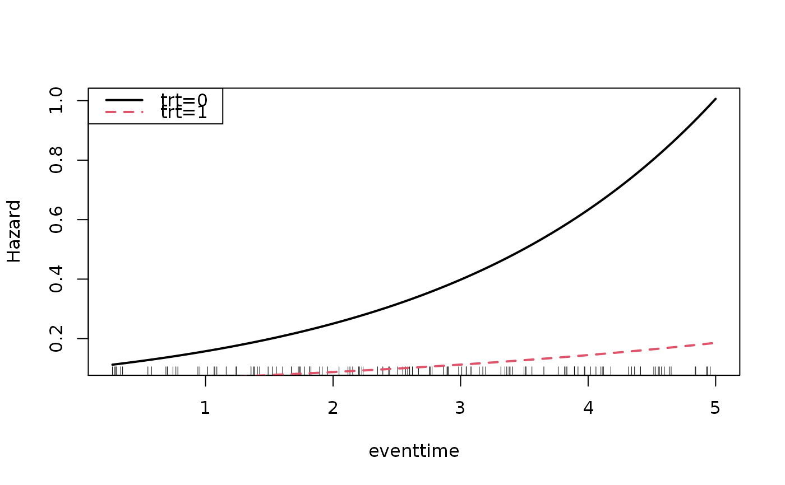

Visualize estimated hazard curves as a function of time with
confidence intervals. This function takes as input, the result from the
fitSmoothHazard() function. The user can also specify a
sequence of times at which to estimate the hazard function. These plots are
useful to visualize the non-proportional hazards, i.e., time dependent
interactions with a covariate.
Fitted object of class glm, gam, cv.glmnet or gbm. This
is the result from the fitSmoothHazard() function.
A data frame in which to look for variables with which to predict. This is required and must contain all the variables used in the model. Only one covariate profile can be used. If more than one row is provided, only the first row will be used.
Type of plot. Currently, only "hazard" has been implemented. Default: c("hazard")
x-axis label. Default: the name of the time variable from the
fitted object.
Number of points at which to estimate the hazard. This argument
is only used if argument times=NULL. This function will calculate a
sequence of times between the minimum and maximum of observed event times.
Default: 100.
Confidence level. Must be in (0,1), Default: 0.95
y-axis label. Default: NULL which means the function will put sensible defaults.
Line color, Default: 1. See graphics::par() for details.
Confidence band color. Only used if argument ci=TRUE,
Default: 'grey'
Line type. See graphics::par() for details, Default: par("lty")
Logical; if TRUE add to an already existing plot; Default: FALSE
Logical; if TRUE confidence bands are calculated. Only available
for family="glm" and family="gam", Default: !add
Logical. Adds a rug representation (1-d plot) of the event times
(only for status=1), Default: !add
Value of the penalty parameter lambda at which predictions are
required (for class cv.glmnet only). Only the first entry will be
used if more than one numeric value is provided, Default: c("lambda.1se",
"lambda.min")
Vector of numeric values at which the hazard should be
calculated. Default: NULL which means this function will use the minimum
and maximum of observed event times with the breaks argument.
further arguments passed to graphics::matplot()
a plot of the hazard function and a data.frame of original data used
in the fitting along with the data used to create the plots including
predictedhazard which is the predicted hazard for a given covariate
pattern and time predictedloghazard is the predicted hazard on the log
scale. lowerbound and upperbound are the lower and upper confidence
interval bounds on the hazard scale (i.e. used to plot the confidence
bands). standarderror is the standard error of the log hazard (only if
family="glm" or family="gam")
This is an earlier version of a function to plot hazards. We
recommend instead using the plot method for objects returned by
fitSmoothHazard(). See plot.singleEventCB().
data("simdat")
mod_cb <- fitSmoothHazard(status ~ trt * eventtime,
time = "eventtime",
data = simdat[1:200,],
ratio = 1,
family = "glm")
results0 <- hazardPlot(object = mod_cb, newdata = data.frame(trt = 0),
ci.lvl = 0.95, ci = FALSE, lty = 1, line.col = 1, lwd = 2)
head(results0)
#> trt eventtime offset predictedloghazard predictedhazard
#> 1 0 0.2695865 0 -2.186588 0.1122993
#> 1.1 0 0.3173684 0 -2.164438 0.1148144
#> 1.2 0 0.3651504 0 -2.142289 0.1173859
#> 1.3 0 0.4129323 0 -2.120139 0.1200149
#> 1.4 0 0.4607143 0 -2.097989 0.1227029
#> 1.5 0 0.5084963 0 -2.075840 0.1254510
hazardPlot(object = mod_cb, newdata = data.frame(trt = 1), ci = FALSE,
ci.lvl = 0.95, add = TRUE, lty = 2, line.col = 2, lwd = 2)
legend("topleft", c("trt=0","trt=1"),lty=1:2,col=1:2,bty="y", lwd = 2)
